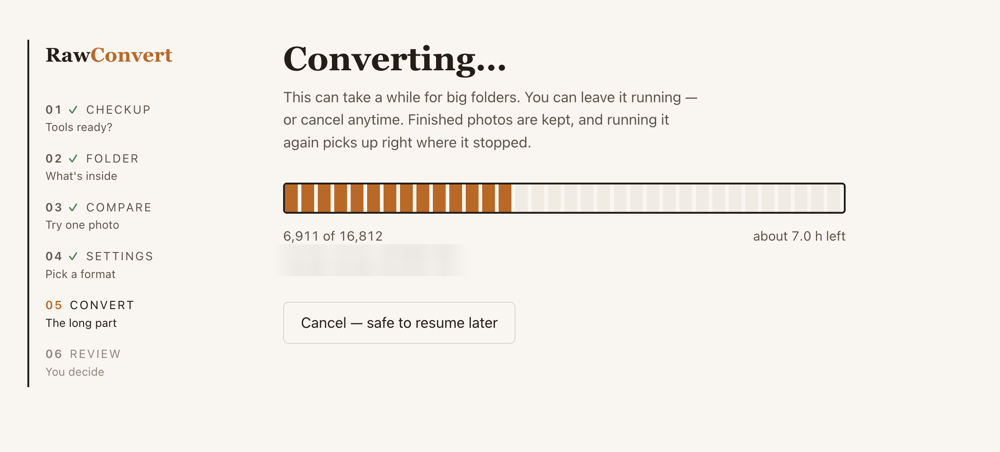

RawConvert
RawConvert shrinks Canon CR2/CR3 photos into DNG, HEIC, or JPEG — right on your Mac. Nothing is uploaded anywhere, and nothing is ever deleted without you looking it in the eye first.

Point it at your external drive. RawConvert counts your photos and estimates the space you'll get back — read-only, nothing changes yet.
Try one photo in every format and judge the quality yourself in Preview. Then convert the whole folder with live progress and a time estimate.
Every converted photo is double-checked, then originals are set aside — not deleted. You review them in Finder and empty the folder yourself.
_rawconvert_trash folder on your drive. Emptying it is
a human decision, made in Finder.Measured on real Canon CR3 files. Your numbers depend on your camera — the app converts one photo first so you can see for yourself.
Really. There is no code path in RawConvert that deletes a photo. Originals are moved to a clearly-named folder on the same drive, and the app tells you to review it in Finder. Deleting that folder is always your call.
That's the standard notice for apps downloaded outside the App
Store. Right-click RawConvert.command, choose
Open, then click Open — once. After that it's a normal
double-click.
On a brand-new Mac, RawConvert needs a small free Apple component. Click Install, give it a few minutes, and launch RawConvert again. One-time thing.
Adobe's free DNG Converter. RawConvert's checkup screen links you to it and re-checks with one click. DNG files stay fully editable in Lightroom and friends.
Canon CR2 and CR3 files today, converting to DNG, HEIC, or JPEG. The built-in compare step shows you all of them side by side — including both JPEG engines — before you commit.